Charlotte, NC Custom Fence Installation
Exceptional Fences. Extraordinary Outdoor Spaces.
Custom fence installation for Charlotte homeowners who expect more. Explore beautiful fencing options, visualize your project, and get a free estimate from our local team.
- 4.9 on Thumbtack72 reviews
- 2-year warrantyIn writing
- Free estimatesOn-site, itemized
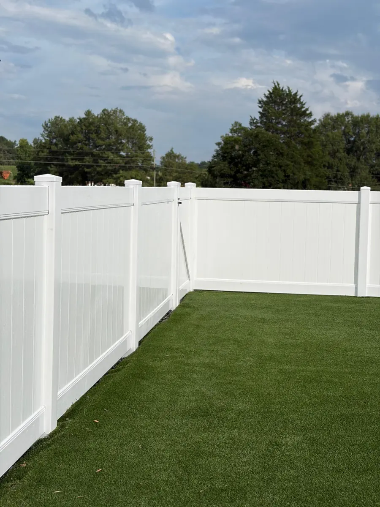
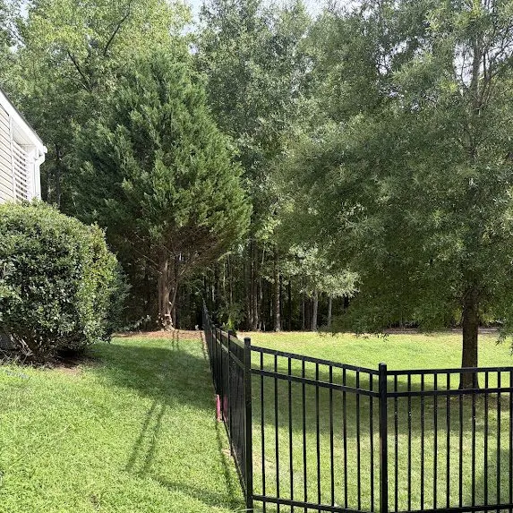
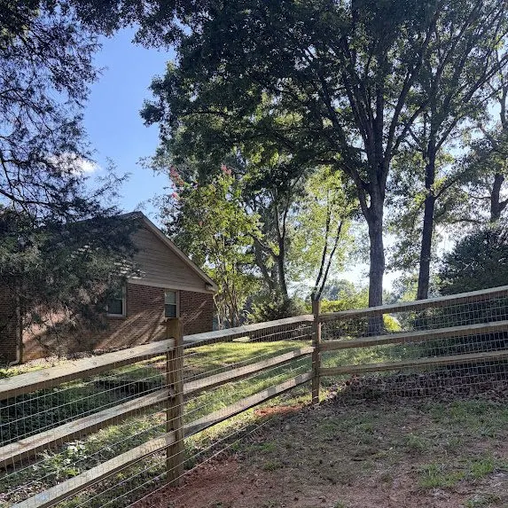
Serving Charlotte & Surrounding Communities
Real Fences & Firepits installations
Custom Designed. Expertly Installed. Built to Last.
Owner-Led Estimates
Ron walks your property, measures the line and talks through options.
2-Year Warranty
Every installation is covered by a written workmanship warranty.
Permits Handled
Required municipal or county permits are handled by our team.
HOA-Ready Specs
Material, height, color and layout details for your committee.

About our company
Fences Built Around the Way You Live
Fences & Firepits is a Charlotte-area fence company led by its owner, Ron Memallaj. Since 2022, we have installed wood, vinyl, aluminum and chain link fences and custom gates for homeowners, HOAs and businesses.
From privacy for the backyard to code-minded pool enclosures, every fence is planned around your property, your neighborhood's requirements and how you use your yard.
LEARN MORE ABOUT USServices
Custom Fences for Charlotte Homes
Whether you are replacing a worn fence or enclosing a yard for the first time, we install fences that fit your home, your budget and your HOA.
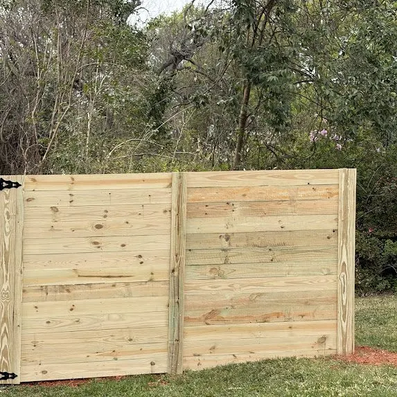
Wood Fencing
Cedar and pressure-treated privacy, picket and horizontal styles.
Explore Wood Fencing →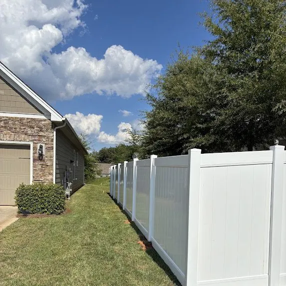
Vinyl Fencing
Low-maintenance privacy and lattice-top vinyl in clean finishes.
Explore Vinyl Fencing →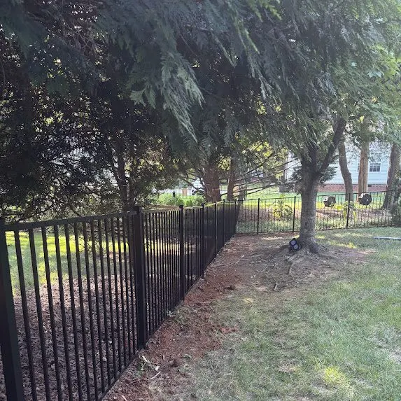
Aluminum Fencing
Ornamental black aluminum for pools, yards and open views.
Explore Aluminum Fencing →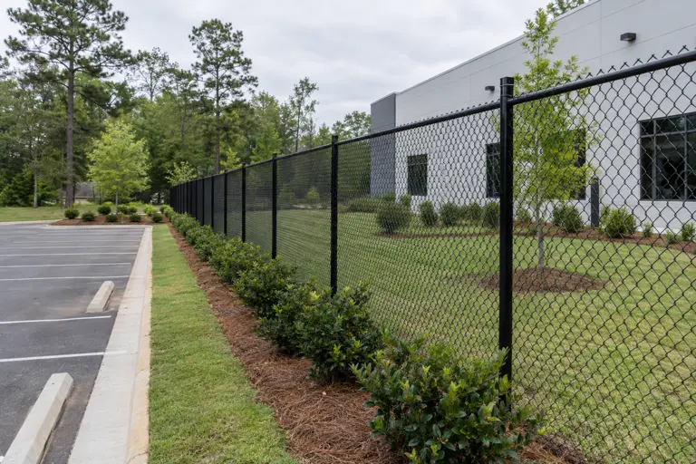
Concept image · not a completed projectChain Link Fencing
Durable, economical fencing for yards, pets and properties.
Explore Chain Link Fencing →Split Rail Fencing
Open, classic boundaries with optional wire mesh for pets.
Explore Split Rail Fencing →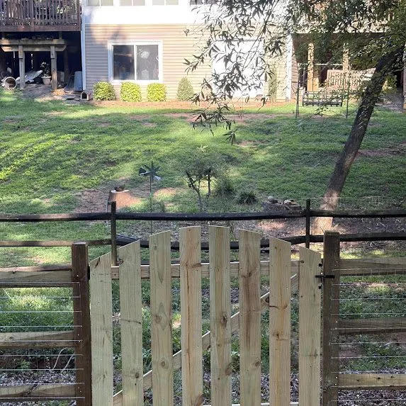
Custom Gates
Walk, double, driveway and arched gates built to match.
Explore Custom Gates →Fence Style Explorer
Find the Fence That Fits Your Home
Compare looks, privacy, maintenance and budget tier for every fence we install.
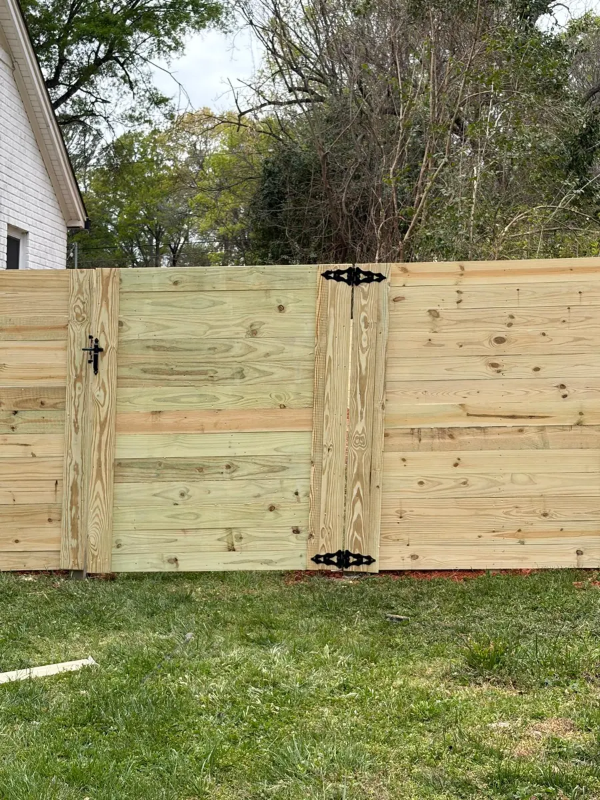
Wood Fencing
Pressure-treated pine and cedar fences built with galvanized hardware. Wood gives you the widest range of styles, from tall board-on-board privacy to modern horizontal designs.
- Privacy
- Full
- Budget tier
- $$
- Heights
- Available in 3, 4, 6, 8 ft.
- Maintenance
- Periodic cleaning and a stain or sealer every few years keeps wood looking its best and slows weathering.
- Popular styles
- Standard privacy (dog-ear) · Board-on-board · Shadowbox · Horizontal · Stockade
- Best for
- Backyard privacy · Dog containment · HOA neighborhoods · Modern and farmhouse homes
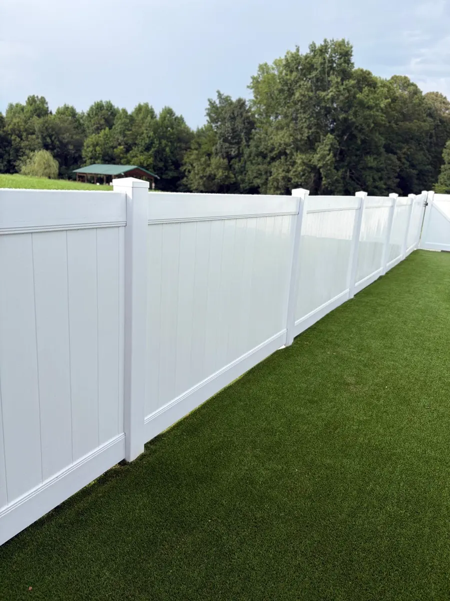
Vinyl Fencing
Vinyl fencing keeps a bright, finished look without painting or staining. Popular for privacy, semi-privacy, picket and ranch-rail layouts.
- Privacy
- Full
- Budget tier
- $$$
- Heights
- Available in 3, 4, 5, 6 ft.
- Maintenance
- Rinse with a hose or mild soap as needed. No staining or painting.
- Popular styles
- Full privacy · Semi-privacy · Lattice-top privacy · Picket · Ranch rail
- Best for
- Low-maintenance privacy · HOA neighborhoods · Traditional and farmhouse homes · Pets and kids
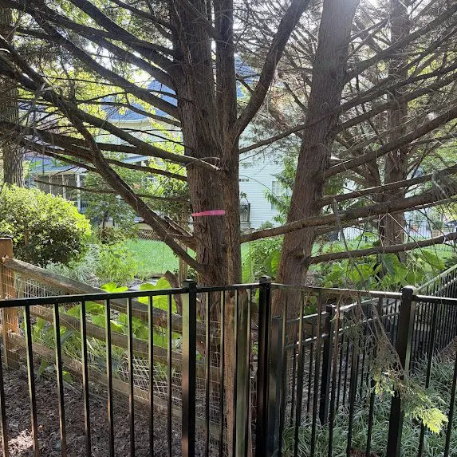
Aluminum Fencing
Powder-coated aluminum gives you the ornamental look of wrought iron without rust. A favorite for pools, front yards and estate properties.
- Privacy
- Open
- Budget tier
- $$–$$$
- Heights
- Available in 3, 4, 4.5, 5, 6 ft.
- Maintenance
- Very low. Occasional rinse; the powder-coat finish does not need painting.
- Popular styles
- Flat-top · Spear-top · Three-rail · Flush-bottom · Puppy picket
- Best for
- Pool barriers · Front yards · Estate and luxury homes · Pets (with puppy pickets)
Chain Link Fencing
Galvanized or black vinyl-coated chain link for property boundaries, pets, sports areas and commercial perimeters.
- Privacy
- Open
- Budget tier
- $
- Heights
- Available in 4, 5, 6, 8 ft.
- Maintenance
- Low. Check tension and hardware occasionally.
- Popular styles
- Galvanized · Black vinyl-coated · Residential · Commercial
- Best for
- Budget-friendly boundaries · Pets · Commercial perimeters · Sports and utility areas
Privacy Fencing
Solid wood or vinyl panels that block sight lines from neighbors and the street. Board-on-board, horizontal and full-privacy vinyl are the most requested.
- Privacy
- Full
- Budget tier
- $$–$$$
- Heights
- 6 ft is the most common backyard privacy height; 8 ft where allowed.
- Maintenance
- Wood: stain every few years. Vinyl: rinse as needed.
- Popular styles
- Board-on-board wood · Horizontal wood · Full-privacy vinyl · Lattice-top vinyl
- Best for
- Backyards · Dogs · Hot tubs and patios
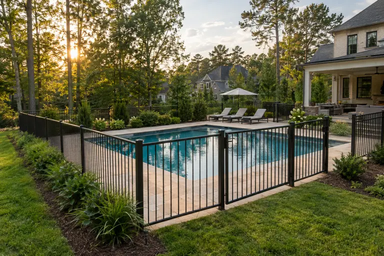
Concept image · not a completed projectPool Fencing
Open-view aluminum barriers with self-closing, self-latching gate hardware options, planned around your pool layout and inspector requirements.
- Privacy
- Open
- Budget tier
- $$–$$$
- Heights
- Pool barriers typically start at 4 ft; your local code sets the minimum.
- Maintenance
- Very low; powder-coated finish.
- Popular styles
- Flat-top aluminum · Spear-top aluminum · Puppy picket
- Best for
- In-ground pools · Kids and pets · HOA communities
Decorative Fencing
Fences that frame the home: ornamental aluminum, picket, lattice tops and arched gates that add curb appeal without walling off the view.
- Privacy
- Low–Medium
- Budget tier
- $$–$$$
- Heights
- 3–5 ft for front yards and gardens.
- Maintenance
- Varies by material.
- Popular styles
- Spear-top aluminum · Wood or vinyl picket · Lattice-top vinyl · Arched gates
- Best for
- Front yards · Gardens · Entries and courtyards
Commercial Fencing
Perimeter, security and boundary fencing for businesses, facilities and property managers, plus commercial gates.
- Privacy
- Open
- Budget tier
- $–$$$
- Heights
- 6–8 ft is typical for security perimeters.
- Maintenance
- Low.
- Popular styles
- Commercial chain link · Black-coated chain link · Commercial aluminum · Commercial gates
- Best for
- Facilities · Lots and yards · Multifamily
Fence Design Studio
Your Dream Fence Starts Here
Choose a material, style, height, color and gates, then see it on a model home in 3D, in daylight or evening light. Save it as a PDF or send it straight to us with your estimate request.
- Rotate, zoom and switch camera views
- Compare two designs side by side
- Download an HOA specification sheet
Why choose us?
Built Right. Backed in Writing.
Owner-led estimates, permits handled, HOA-ready specifications and four fence materials plus custom gates, all from one local team.
DISCUSS YOUR FENCE PROJECT4.9 Rating on Thumbtack
Rated 4.9 from 72 customer reviews on our public Thumbtack profile (as of October 2026).
2-Year Written Warranty
Installation workmanship is warranted for two years, with the terms published in writing.
Free On-Site Estimates
We measure your fence line and give you a written, itemized estimate at no cost.
Three Counties Served
Installing throughout Mecklenburg, Union and Cabarrus counties.
Our projects
Fences Built With Attention to Every Detail
Every photo below is a real Fences & Firepits installation.
How it works
Our Process
From the first call to the final walkthrough, you know what is happening and what is included.
- 01
Free on-site estimate
Ron or a team member walks the property with you, measures the fence line, notes slopes, trees, utilities and gate locations, and talks through materials and styles that fit your goals and HOA.
- 02
Written proposal
You receive a written estimate with the material, height, style, footage, gates and scope spelled out, so you know exactly what is included before you sign.
- 03
Planning and approvals
We help you gather the drawings and specifications your HOA or architectural committee asks for. Utility locating is requested before any digging.
- 04
Installation day
Posts are set, framing and panels or pickets are installed and gates are hung, adjusted and latched. Many residential projects are completed in a short window once materials arrive; your proposal lists the expected schedule.
- 05
Walkthrough
We review the finished fence with you, check gate swing and latches, and make sure the site is cleaned up before we leave.
Customer reviews
4.9 on Thumbtack From 72 Reviews
“Ron and his team did an outstanding job on our fence installation. They were punctual, professional, and delivered excellent craftsmanship. The entire process was smooth, and the final result looks fantastic.”
“Ron and his team did amazing work and finished a large fencing job for us in only a day! It looks stunning and they were extremely professional and communicative.”
“Ron and his team were very reliable and trustworthy. He came out to my house for free and walked my property and took the time to evaluate all my options with me.”
Reviews quoted from Fences & Firepits' public Thumbtack profile, October 2026. Read more reviews
Fence Style Quiz
Not Sure Where to Start?
Answer five quick questions and we will recommend a material, style and height. Then save it and request your estimate.
Service areas
Proudly Serving Charlotte, NC & Surrounding Areas
Fences & Firepits installs fences throughout Mecklenburg, Union and Cabarrus counties. Contact us to confirm installation availability for your address.
FAQ
Frequently Asked Questions
Still have a question?
Talk with Ron directly. He can answer questions about materials, HOA rules and your property.
CALL (980) 339-2182What areas do you serve?
We serve Charlotte and surrounding communities in Mecklenburg, Union and Cabarrus counties, including Matthews, Mint Hill, Pineville, Huntersville, Cornelius, Davidson, Waxhaw, Weddington, Marvin, Wesley Chapel, Indian Trail, Stallings, Monroe, Concord, Harrisburg, Kannapolis and Mount Pleasant.
Are estimates free?
Yes. We visit the property, measure and provide a written estimate at no cost.
What fence materials do you install?
Wood (pressure-treated pine and cedar), vinyl, aluminum and chain link, plus walk, double, driveway and custom gates.
What warranty do you offer?
Installations include a 2-year limited workmanship warranty covering defects in installation workmanship, such as improperly set posts or structural instability caused by installation error. Materials are covered by their manufacturers' warranties. See our Warranty page for the full terms and exclusions.
Do you help with HOA approval?
Yes. We provide the material, style, height, color and layout details your HOA application usually asks for, and you can export a specification sheet from the Design Studio. The HOA makes the approval decision.
Who is responsible for property lines?
The property owner is responsible for identifying property lines. A survey is the most reliable way to confirm them. Our planner and measurements are approximate and do not establish legal boundaries.

Get a Free Estimate
Tell us about your fence and Ron or a team member will follow up to schedule your free on-site estimate.